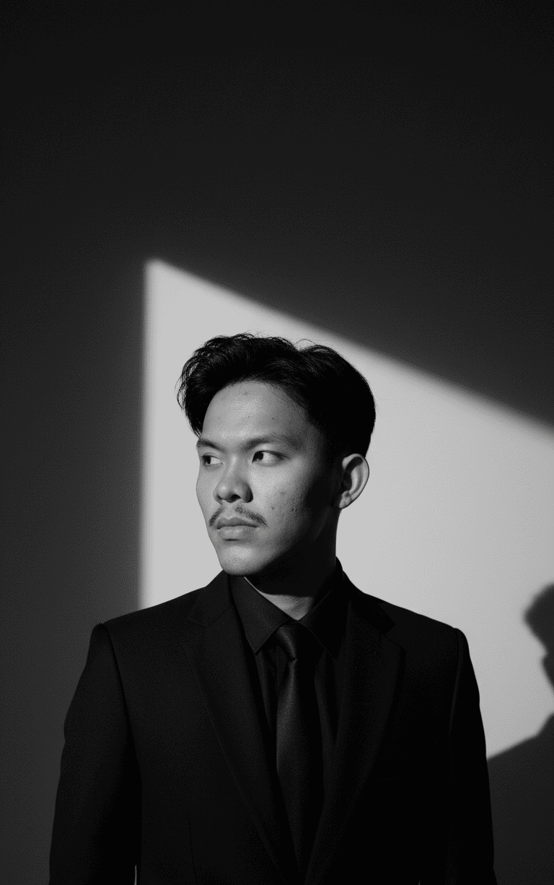

Hai, saya Hafidh 👋. Lulusan S1 Teknik Informatika di Universitas Krisnadwipayana. Saya suka mengeksplorasi teknologi, khususnya di bidang AI, Machine Learning, dan Computer Vision. Project terakhir yang saya selesaikan adalah deteksi jenis beras dengan algoritma YOLO, sebuah pengalaman yang membuka wawasan saya tentang penerapan AI di kehidupan sehari-hari. Di luar itu, saya selalu bersemangat untuk belajar hal baru dan mengerjakan project yang memberi dampak positif.


